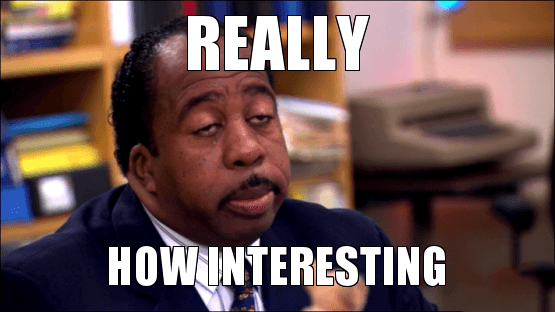
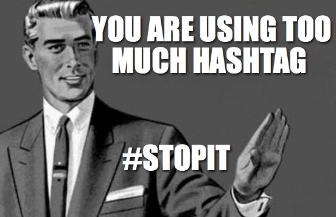

Have you noticed the number of your Twitter followers decreasing at such a steady rate and you just don’t know what makes people unfollow your account?
Are you thinking of changing your tweeting style to get those followers back up maybe slowly but surely?
If you’re one of those tweeps who is bothered with the continuous decrease of your Twitter followers, don’t fret too much because there is a reason why people unfollow your Twitter account and of course, there is a solution to it.
This article will show you the most frequent reasons why people unfollow your account and how to keep your followers happy and, of course, keeping you happy about it too.
#1 You must’ve forgotten why it is called a “social” media and gotten too noisy
Too much self-promotion or too much spam is always a no-no in any social-networking platform. No one loves a spammer and a self-promoter. It is okay if you tweet about yourself occasionally or promote your business or an event, just don’t tweet about what you’re doing every minute. Your followers don’t need a play by play.
Some people would say that it is best to follow the 90/10 rule wherein 10% are the tweets about you, and the rest is about something else. Try sharing the tweets of others and keep your followers engaged by posting questions or asking about their thought on something. With this in mind, you would have a balanced tweet between personal, business and social.
Show some personality in your tweets too and don’t go overboard in promoting your business. Show your followers that there is a human being behind your Twitter account and not a bot. Give them a taste of who you really are, but don’t go overboard especially when the day is not even halfway done.
Make sure your shared content adds value to the online conversation. Genuinely help people and they will appreciate occasional self-promotional tweets.
#2 Too much angry tweeting
If you have anger issues, it would be easily read on your tweets. Your tweets would show too much negativity and this is one sure reason why people unfollow your Twitter account.
Tweeps are in this social-networking platform to keep in touch with friends and or promote their business. And these are the kind of people who always steer clear of negative vibes. They want to associate themselves with positivity rather than to be on the receiving end of your raves and rants.
#3 You’re just not that interesting anymore

There are times when we don’t have anything much to say anymore, and we might’ve become too quiet. Your followers may think that your account has gone dormant, and this is one sure way as to why people unfollow your Twitter account.
Put some consistency in your tweets, keep your followers engaged, and let them know that you are alive and well. Provide them with regular updates about your business perhaps, or maybe how your weekend or week has been so far. Just keep in mind that too much of anything is never a good thing.
Another reason you might seem uninteresting to some is that you are providing no value whatsoever. Try including some helpful links or quick tips you might’ve come across online. Your followers want to make sense of what you are tweeting about and some are even looking for conversation starters. This is a good way to increase your Twitter follower base and sometimes, you could even gain a friend or two.
Oh and don’t forget to hit that reply button if someone mentions you by the way. Keep the conversation flowing; if you can, that is.
#4 You’re offending people
Offensive comments are a sure reason as to why people unfollow you. Be careful sounding too demeaning or too harsh on your tweets. Don’t accuse anyone of anything. Stay away as much as possible if you are talking about your extreme viewpoints about someone’s race, religion and anything political as well.
Don’t mock others and don’t complain too much. Don’t be too arrogant either. And stay away from tweets about how drunk you were last night or how much you hate your boss. Being judgmental doesn’t help either.
Try practicing a bit of a tact with your tweets so that others will not be uncomfortable around you. If tweeps find your tweets too uncomfortable, don’t be shocked why people unfollow your Twitter account.
#5 You hoard content and is too narcissistic
Sharing is very important with any social-networking platform. So don’t be shy about sharing some awesome content or links you may find online. Just don’t share too much about yourself all the time to the point of being self-centered. If you constantly tweet about yourself, chances are this would be the reason why people unfollow your Twitter account.
Twitter is known to attract narcissists, so don’t be one of them.
People like it more if you show interest in them.
Keep them happy, and you have a happy follower.
#6 Don’t alienate your audience
People followed you for a reason. Don’t rant too much about other topics like religion or politics. If you’re already doing this, chances are this would be one of the reasons why people unfollow your account.
Remember your target audience and stay on track. It is pretty hard to please everybody, but easier to include a handful at a time.
#7 Your tweets are off
People followed you for a reason. One of this could be something they found in your profile bio. They often read about what you do and why you’re on Twitter and then they would decide to follow you if they like what they read. But if you do a 360 on your beliefs and principles, chances are people will unfollow you. They would think you are a fake or a hypocrite.
Try and evaluate your goals for your Twitter account. Is it for personal use or for business use. If it is for business, tweet about it 90% of the time and 10% for personal. Stay focused on your niche to avoid confusing your followers.
Be sure to stay on topic.
#8 Automation
Too much automation is a pain. People don’t like to follow someone, then be greeted with an auto DM. Tweeps wanted to follow a person, not a bot.
This is a major factor why people unfollow your Twitter account.
Sending direct messages to complete strangers is like asking the people seated at the next table to pay for your lunch.
Social media automation can be very beneficial in growing your accounts and improving your marketing campaigns. But you have to know how to use it in your favor. Overuse it and your profile will look fake to your audience.
#9 Ranting too much about Politics
Unless it is your job to provide true and unbiased point of view then don’t rant on and on about politics. Angry name-calling is just pure negativity and tweeps don’t like that. And besides, with a 140 character limit, it is pretty hard to express a clear thought, especially about politics. Write about it somewhere like your blog or just use a different social-networking platform.
#10 You’re a Hashtag abuser

Hashtagging is a way to search for common tweets and makes it easier to find something that is referenced by a #hashtag. It is not something that makes your tweets cool or updated. A hashtag is used by internet marketers to identify their target market and easily relate to them. So don’t go #idontgetit #notsorry #thisistoomuch #foryourowngood all the time on all of your posts because it does get #annoying most of the time instead of helping your followers. If you’re already doing this, then chances are, now you know why people unfollow your Twitter account.
Wrapping it Up
Here are the main reasons why people unfollow your Twitter account. Remember that too much of anything is never good. So don’t abuse the power of automation that it becomes spam. Don’t talk too much about yourself to the point of narcissism and be reminded to spread good vibes all the way and say no-no to negativity.
Keep your tweets consistent, at different intervals so you won’t be identified as a dormant or silent account. Give updates regularly and be sure to practice tactfulness and stop offending others.
Don’t forget to engage your followers with links or articles you might’ve come across as awesome online and share these with your followers. Keep the ball rolling on any if not all direct messages you have. Be mindful of your target audience and try not to alienate your followers.
Avoid going off track and sending automated direct messages to people you don’t even know. Don’t abuse the power of speech and remember what a #hashtag is for. Choose it wisely not randomly.
Your Twitter followers are very important for the betterment of your business. Keep in mind that they are your friends, family members, colleagues, business partners, clients and even potential clients. They are not just your contacts and they are following you for a reason and rarely random. Avoid making these simple mistakes now that you know why people unfollow your Twitter account.
Anil Agarwal says
Hey Adam,
This is another case of mistaking quality for quantity. A lot of people usually think that the more noise they make on social media, the more their followers will like and value them, not knowing that it actually turns people off.
I couldn’t have agreed more with your points here. I’ve also unfollowed a lot of people because of the same reasons you outlined here, and I wish more people will see this post so they can be careful of what they post on social media.
Thanks for sharing.
Gracina says
This is a really good info about twitter! I love your list.
Will probably apply it to my Twitter Marketing strategies other users use too much hate on their twitter and rant on them which is not doing any good
Charley says
There is so much angry tweeting these days. I like to read different opinions and critical thinking, but sharing negative vibes online is not acceptable for me and these kind of profiles are unfollowed immediately.
Tia says
You should always keep in mind who your target audience is. If you forget about that and start sharing content that will not be part of their interest or that will be completely different from what they expect from you to post, it won’t be unusual if they unfollow you. This can be said for both personal and business profiles.
Janelle says
Yes, if you decide to use automation for your social network, this can be very beneficial only if you know how to properly use it. We use it and pay attention to still keep human touch and to properly target those that will be interested to get some information from us.
Adella says
Great article and I can say that You’re 100% right. You have said so many facts about people and their behavior on social media. Please avoid being “self sufficient”, nobody is. This is just friendly advice. Thanks for sharing this article.
Gospel says
I have told is 100 times, more hashtags more hate 😀 I hate when entire post are hashtags, i really don’t know about what was the topic, what writer wanted to say, nothing, just #blabla
Milan Lavrov says
The most important thing is to be interesting, find the niche and talk about happy things, not sad ones, exclude politics and that kind of stuff. Don’t talk about yourself at all, it’s not necessary 🙂
MDC says
What about people who beg for followers saying they follow back, but then they go back & delete following you? I hate that, it’s so cringe. I don’t like to be petty but in this case, when someone unfollows me, I unfollow them back. In my case, thats the only people who unfollow me so far.